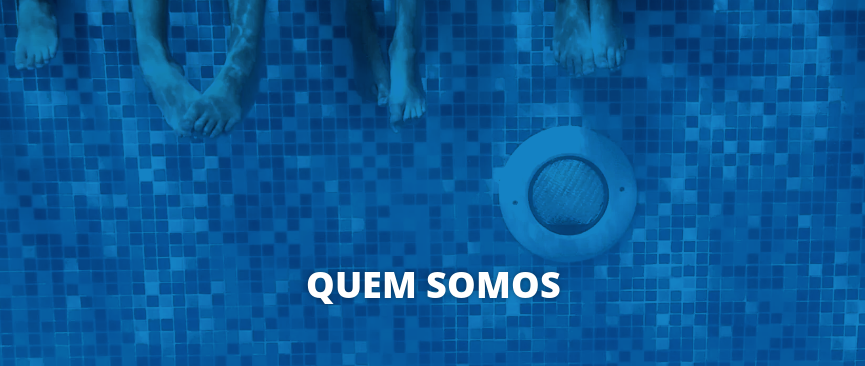

Limpeza e Manutenção em piscinas
A CLEAN WATER É A EMPRESA Nº1 NO TRATAMENTO DAS PISCINAS BRASILEIRAS
A Clean Water é hoje uma das empresas mais completas em todo o território nacional quando o assunto é piscinas, oferecendo desde serviços de limpeza e manutenção para residências e condomínios, até treinamentos e cursos completos.
Nós amamos o que fazemos!
Com mais de 10 anos de experiência na área, nós entendemos todo o funcionamento de uma piscina como a palma de nossas mãos.
Trabalhamos muito para que seu lazer seja garantido e livre de preocupações! Tenha uma piscina bem tratada e saudável, com a certeza de que todos os parâmetros físico-químicos da água estão devidamente ajustados. Com a Clean Water, você terá todos os equipamentos da sua casa de máquinas funcionando adequadamente, evitando surpresas e danos a sua piscina.
Não há piscina grande ou pequena demais, sempre dedicamos nossa energia máxima a todos os projetos que assumimos.